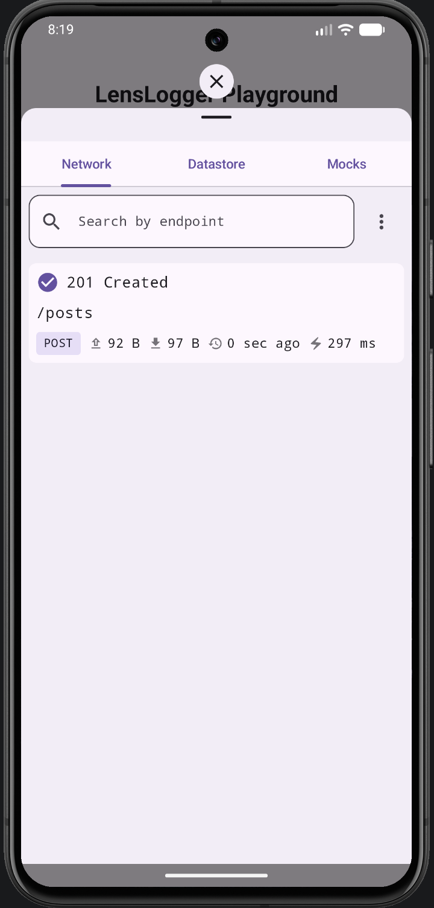
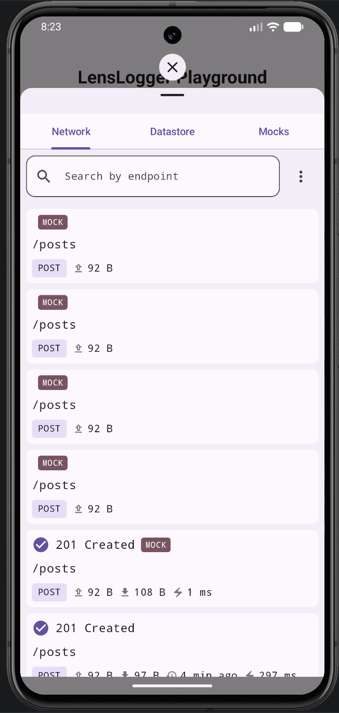

Ktor Client setup
Install LensHttpLogger in the shared HTTP client configuration.
NETWORK VISUALIZER
LensLogger collects configured Ktor and OkHttp traffic in one in-app Network view. Search the request list, inspect the request and response, and continue directly into mocking or cURL testing.
STEP 01
Install a LensLogger integration on the client your app uses, then make a request. LensLogger supports its Ktor logger and the OkHttp application interceptor. Follow the matching setup guide:
Install LensHttpLogger in the shared HTTP client configuration.
Add LensOkHttpInterceptor to the application interceptor chain.
When using the Compose inspector, open the Lens FAB and select the Network tab.
STEP 02
The Network list shows captured calls. Each row can show the response status, endpoint path, HTTP method, request and response sizes, elapsed time, and whether the result came from a mock.
Use Search by endpoint to filter on the request path. Use the overflow menu to clear the captured network logs.


STEP 03
Tap a request to open its detail view. Switch between Request and Response to review the captured data. The response view includes status, URL, expandable response headers, and body.

REQUEST ACTIONS
Use the captured request and response as a starting point for a mock rule, then edit the response or simulate failure.
Copy the selected request as a cURL command to share or reproduce it outside the app.
Mocked requests are marked with a MOCK badge in the Network view. The mocking guide explains how to configure and replay a rule.
TROUBLESHOOTING